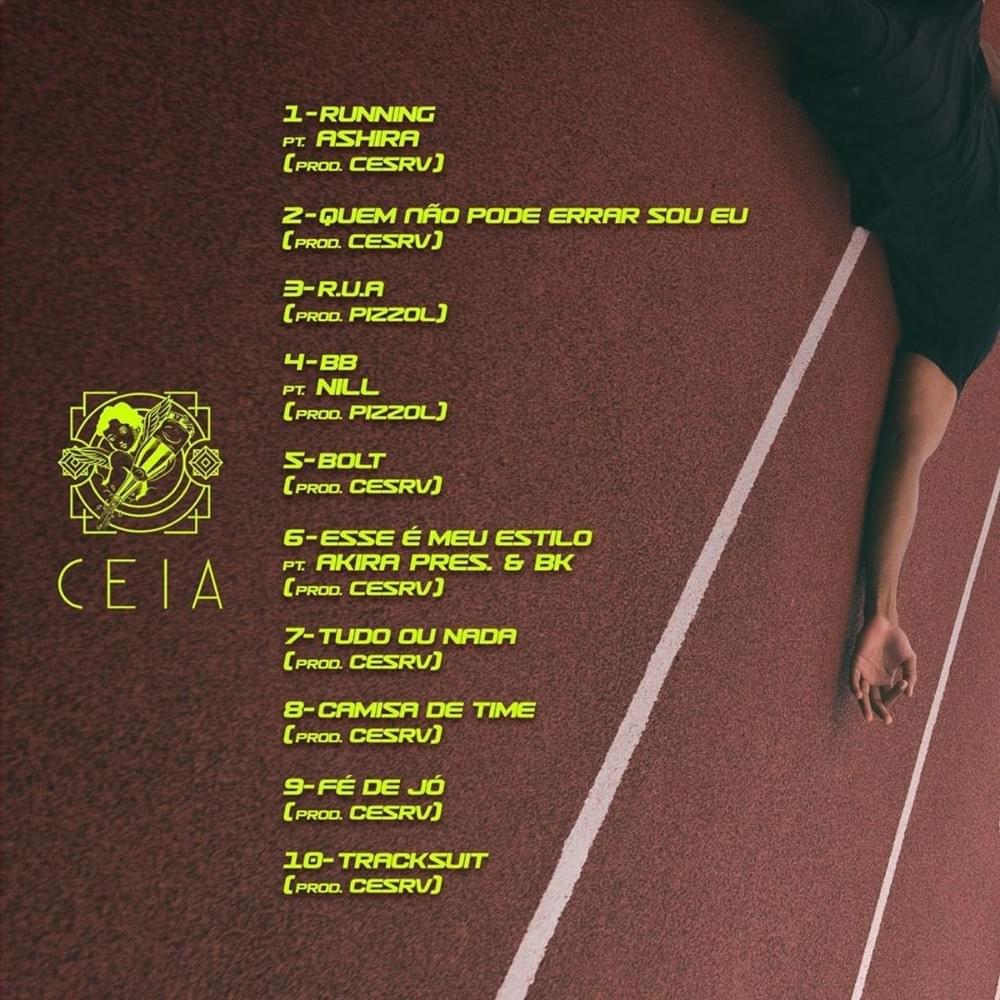
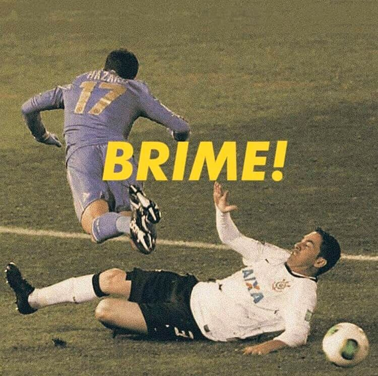
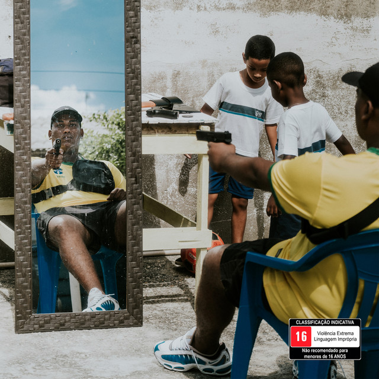

Febem começou a fazer música em 2010, inspirado pela trupe Odd Future, e em 2012, formou o grupo Zero Real Marginal com o também MC Flip e DJ Sleet.
Quando decidiu seguir como artista solo após o fim do trio em 2016, o Grime já havia chegado aos seus ouvidos e foi ele quem ditou os próximos passos de sua carreira.
Também por volta do começo da década, o DJ e produtor Cesar Pierri, que assina como CESRV e é conhecido como Cesinha, já tocava Grime junto de seus companheiros do selo
Beatwise Recordings em festas paulistanas, como a Metanol.fm e a Colab 011, e cariocas como a Wobble.
O produtor conheceu a cena através do contato com ritmos da música eletrônica inglesa.
“Quando nós começamos a tocar Grime nas festas, não tinha ninguém no Brasil que tinha abraçado o estilo e decidido fazer esse tipo de música”, conta Cesinha.
“O máximo que tínhamos eram MCs de Dancehall e Ragga fazendo coisas que migravam do Dubstep ao Grime.”
O interesse de Febem pelo Grime alguns anos para frente, porém, levou a dupla a trabalhar em algumas faixas do EP Elevador, lançado em 2016 e, mais pra frente, em
Running.

“Com o tempo, pude mergulhar mais no estilo e lançar algumas coisas flertando mais nas influências e referências com a cena de Londres, em vez dos EUA, como é de costume”, conta Febem.
“[Running] é um disco que não é só meu, mas do CESRV também.
Além de dirigir toda a produção, finalização e edição, ele deu até uns toques em flows, rimas… Eu e minha música demos um passo a mais na carreira.”
Nascido e criado em São Paulo, Fleezus é corinthiano desde pequeno e sempre esteve envolvido na música.
Logo em seus primeiros anos de vida,
o músico teve que decidir se iria acompanhar seu pai nos bares ou se iria com sua mãe para a igreja.
Foi então que Lucas decidiu seguir o caminho religioso, onde fez parte de um coral evangélico.
“Eu sempre estive na música. Eu tenho para mim que, se eu não tivesse seguido no Grime,
eu estaria fazendo outra coisa dentro da música.
Eu nasci para isso, eu nasci para fazer música, eu não nasci para fazer outra coisa” disse Fleezus ao podcast PodPah.
Graças a música, Fleezus conheceu e formou uma grande amizade e parceria com Febem,
outro rapper corinthiano. Em parceria com o produtor musical Cesrv, lançaram um álbum chamado BRIME!, cujo capa é uma foto de Chicão, ex-zagueiro do Corinthians,
dando carrinho em Hazard, ex-jogador do Chelsea, no Mundial de 2012.

Álbum lançado em 2019 conseguiu ganhar grandes proporções, sendo considerado, por muitos,
como um marco no rap nacional, já que trouxe grande impactação para o Grime. No Prêmio Genius Brasil de Música 2019, BRIME! foi eleito como o melhor álbum do ano. Além de fazer referência através da foto,
na música “CHELSEA”, Fleezus cita Emerson Sheik, Cássio, Ronaldo e o próprio Corinthians.
O Rio de Janeiro é um dos maiores centros de produção cultural do Brasil – e no rap não poderia ser diferente. Da velha guarda até os dias de hoje, o hip-hop carioca se
mantém autêntico e inovador. Um dos nomes para apostar todas as fichas é LEALL, autor do do hit “CACHORRADA” e do single “Criminal Influencer”.
Cria de Marechal Hermes, zona norte do Rio de Janeiro, LEALL faz parte do roteiro periférico de crescer sem pai, contando com uma mãe trabalhadora e diversas influências externas.
“Boa parte do que eu aprendi foi na rua. Por isso, hoje, com 18 anos, os temas das minhas músicas são sempre violentos ou explícitos.” – LEALL
A principal delas, em termos de rap, foi o VND (o rapper também aparece em “CACHORRADA”). “Ele cresceu na mesma rua que eu, era o único da minha área que se vestia com estilo de rapper e ouvia músicas diferentes de funk. Eu me apeguei nele como referência para fugir da mesmice, do crime e do perigo em si.”, conta LEALL.
Há poucos dias de seu primeiro show em São Paulo, que acontecerá sábado (07.09) no NOTTHESAMO Day, LEALL compartilha suas referências de vida, moda e planos futuros.
Além disso, o rapper lançou seu álbum recentemente, que carrega o nome de: Esculpido a Machado

Para o artista, o disco traz uma visão panorâmica sobre o racismo, a violência policial e a pobreza, mas também apresenta um afago de esperança para um futuro melhor. “O Rio de Janeiro é a cidade que eu cresci, aqui estão as minhas melhores e piores experiências.